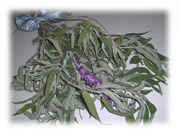
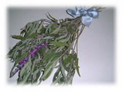

| ..*..*.. 2002年10月22日(火) 晴れ ..*..*..  この夏、育てていたハーブ、セージがとっても大きく育って、８月くらいから、一日一度の水やりでは足りなくなってしまいました。 私は昼間はいないので、朝と夜にしか水やりができないのですが、それでも間に合わなくて、ずいぶん枯れてしまいました。でも、お料理にも使えるし、なんとなくもったいないのでそのままにしていたのですが、先々週、ついに大部分を切り落としました。 枯れてる部分が多いのであまりないと思っていましたが、まとめて見るとずいぶんありました。ブーケにしました。  紫色の花も咲きました。ほんと、見る見る間に大きくなって、やっぱりハーブって楽しいですね。 葉っぱは刻んで肉料理（主にひき肉）にまぜると臭みが消えます。ただ、ローズマリーのようにいい香りはしないので、あまり他のものとまぜたりしないで、うちは天ぷらにしたりしてます。歯ごたえがあっておいしいですよ。 食べる分だけ少し残してたんだけど、下の方からもう芽が出てきてるんですよ。たくましい成長力です。 |